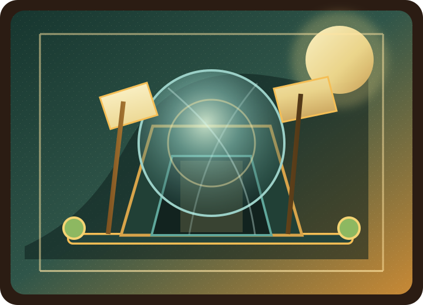

Маршрут восстановления
Солнечная цитадель открывает водный путь.
Water inspection
Линза показывает состояние, а не украшает фон.
Flow
74%
Риск
Низкий
Сводка
4 поля · 2 спорных · 1 скрыто
Sun-vellum ledger
Компоненты держат русский и английский текст.
- Навигация Компактная
- Contrast gate Readable
- Материал Vellum · Brass · Water